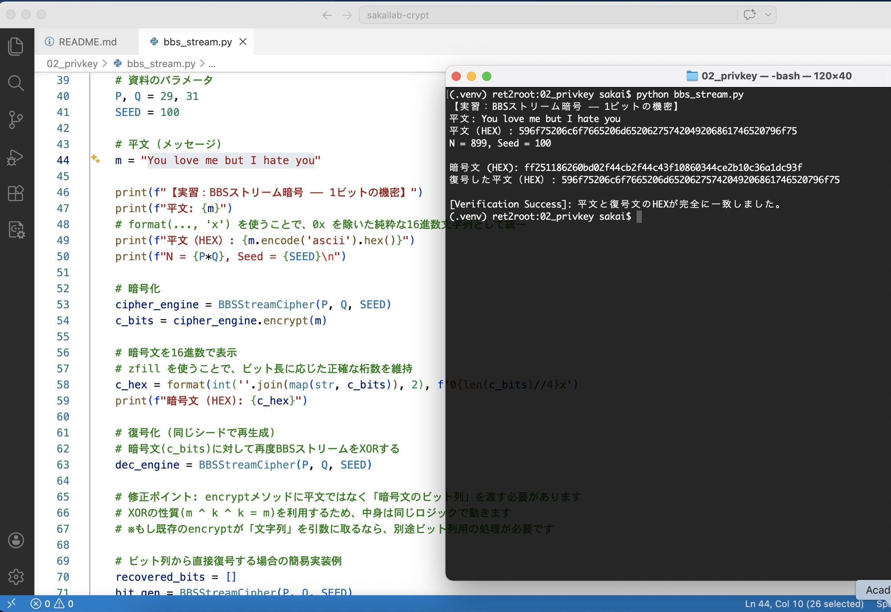
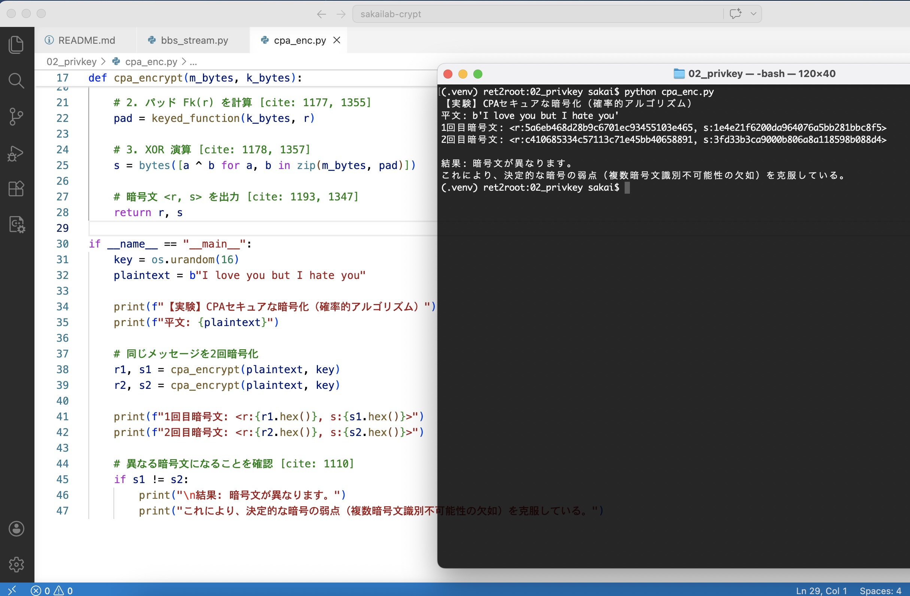
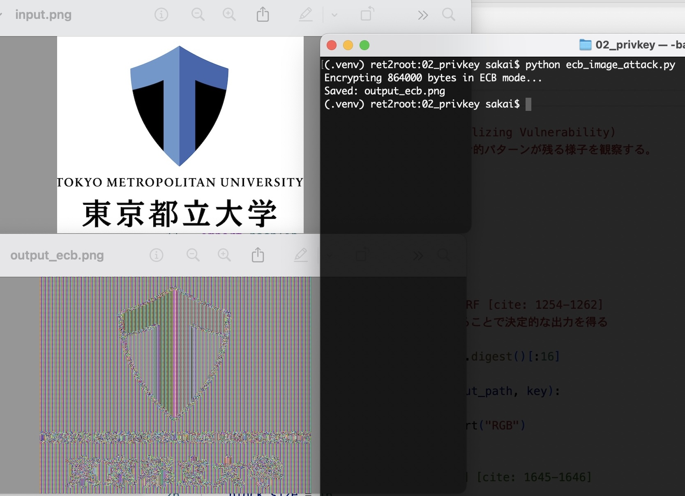
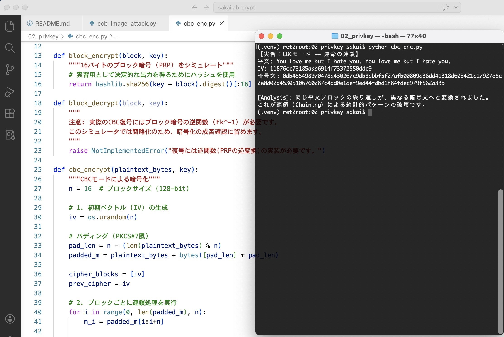
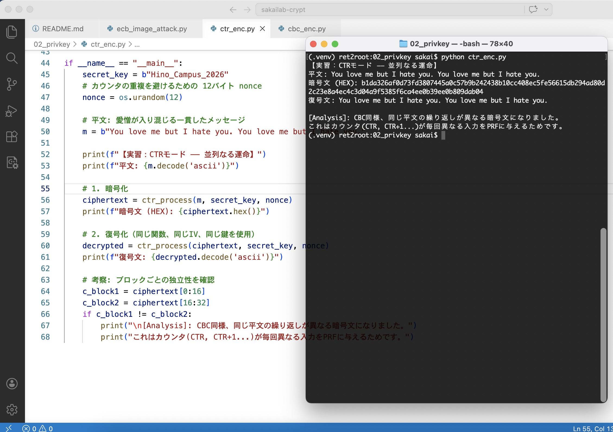
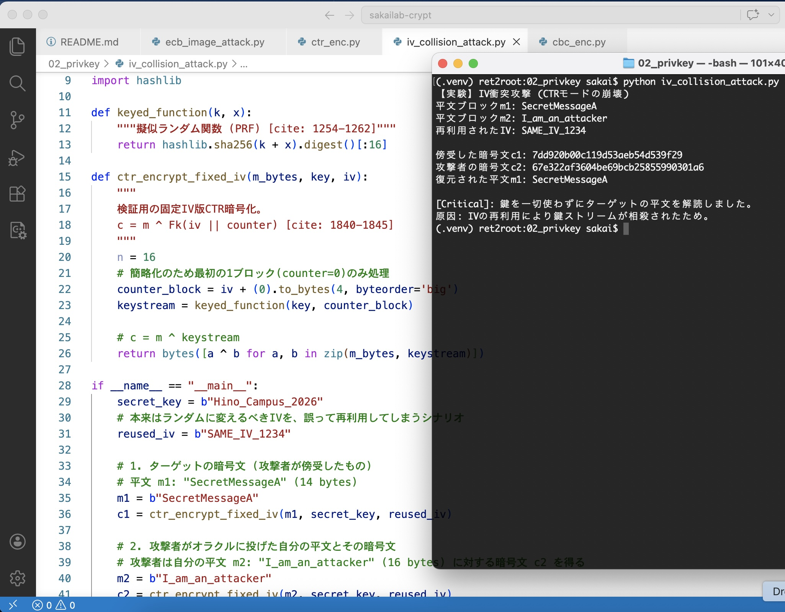

LAB NAVIGATION:
01_CLASSIC
02_PRIVATE_KEY
03_MAC_HASH
04_PUBLIC_KEY
EXERCISE #005 // BBS_STREAM_CIPHER // 2026.04.02
Lab #05: ストリーム暗号 ―― 1ビットの機密と計算の壁
情報理論的安全性（完全秘匿性）の限界 を超え、我々は「計算量的安全性」の領域へ足を踏い入れた。
今回は、素因数分解の困難性に安全性の根拠を置く Blum-Blum-Shub (BBS) 生成器 を用い、ビット単位で情報を保護するストリーム暗号を実装した。
# 実行結果：シード 100 から生成された BBS ストリームによる XOR 演算
# 平文 (m): You love me but I hate you
# 平文（HEX）: 596f75206c6f...
# 暗号文（HEX）: ff25118626...
⚙️ Evidence: PRG-based Encryption
以下の実行ログ（lab2_stream.jpg）を確認せよ。
短い鍵（シード）から生成された「疑似乱数ストリーム」 G(k) が、平文の HEX データと XOR 演算され、統計的な偏りが完全に破壊された暗号文へと変貌している。

【計算量的安全性の証明】:
# 今日の教訓: 運命の同期（Synchronization）
「君は私を愛しているが、私は君が憎い（You love me but I hate you）」という、決定的に非対称な感情。
この残酷な真実も、BBS 生成器を通せば等しく「識別不能なノイズ」へと収束する。
一方向関数という檻の中に、真実を封じ込めよ。
"Go West!" ―― 運命の歯車を同期させ、情報の荒野を貫く真実のラインをビルドせよ。
EXERCISE #006 // CPA_SECURE_ENCRYPTION // 2026.04.02
Lab #06: CPAセキュアな暗号 ―― 一貫性のなさが生む機密
これまでの決定的な暗号スキーム（シーザーや単純なストリーム暗号）は、同じ鍵で同じ平文を暗号化すると必ず同じ暗号文が出力されるという致命的な弱点を持っていた。
今回は、擬似ランダム関数（PRF） と乱数（nonce） を組み合わせることで、選択平文攻撃（CPA）に耐えうる確率的アルゴリズムを実装した。
# 実行結果：同じ平文を2回暗号化しても、異なる暗号文が生成される
# 平文: b'You love me but I hate you'
# 1回目暗号文: <r:5a6eb468d28b9c6701ec93455103e465, s:1e4e21f6200da964076a5bb281bbc8f5>
# 2回目暗号文: <r:c410685334c57113c71e45bb40658891, s:3fd33b3ca9000b806a8a118598b088d4>
🛡️ Evidence: Probabilistic Encryption
以下の実行ログ（lab2_cpaenc.jpg）を確認せよ。
暗号化のたびに新しい乱数 r が生成され、それに基づいたパッド F_k(r) が作られることで、同一のメッセージから全く異なる暗号文 s が出力されている。

【選択平文攻撃への耐性】:
# 今日の教訓: 振れ幅こそが「解読不能」の正体
「君は私を愛しているが、私は君が憎い（You love me but I hate you）」というメッセージを君に二度送った。
実行ログを見てほしい。一度目と二度目、私の態度は 1-bit も重なることなく、全く異なる「ノイズ」として出力されている。
暗号化とは、意図的に「偶然」を付加する行為である。
"Go West!" ―― 運命の乱数を引き当て、二度と繰り返されることのない「今」を刻み込め。
EXERCISE #007 // ECB_IMAGE_VULNERABILITY // 2026.04.02
Lab #07: ECBモードの脆弱性 ―― 隠しきれない「形」の正体
ブロック暗号を最も単純に適用した ECB (Electronic Code Block) モード の安全性を検証する。
このモードは各ブロックを独立して暗号化するため、平文に存在する統計的なパターンが暗号文にもそのまま残存してしまう性質を持つ。
# 実行結果：東京都立大学ロゴの暗号化
# 入力 (input.png): 864,000 bytes
# モード: ECB (各ブロック 16バイト独立処理)
# 保存先: output_ecb.png
🖼️ Evidence: Pattern Leakage
以下の実行結果（lab2_ebc.jpg）を確認せよ。
暗号化されたはずの output_ecb.png に、元の東京都立大学のロゴの輪郭や文字の形がはっきりと浮かび上がっている。

【一貫性の罠】:
# 今日の教訓: 隠したつもりの「癖」にご用心
諸君、この無残に透けて見えたロゴを見てほしい。
表面上は砂嵐のように見えても、同じ入力を同じ鍵で処理し続ける ECB のような愚直さは、暗号論においては「無防備」と同義だ。
一貫性は美徳だが、暗号においては脆弱性となる。
"Go West!" ―― 決定的な連鎖を断ち切り、運命を攪拌する CBC モードの深淵へ。
EXERCISE #008 // CBC_CHAINING // 2026.04.02
Lab #08: CBCモード ―― 過去を糧にする運命の連鎖
前回の ECB モードの敗北を受け、我々は CBC (Cipher Block Chaining) モード を導入した。
このモードは、暗号化のプロセスに「文脈（Context）」を取り入れ、統計的な偏りを徹底的に攪拌する構造を持つ。
# 実行結果：同じ平文ブロックの繰り返しが、異なる暗号文へと変換される
# 平文: You love me but I hate you. You love me but I hate you.
# IV: 11876cc73185aab6914f73372550ddc9
# 暗号文: 0db455498970478a430267c9db8dbbf5...2e0d02d45305106760287c4ad0e1aef9...
⛓️ Evidence: Diffusion by Chaining
以下の実行ログ（lab2_cbc.jpg）を確認せよ。
平文では「You love me but I hate you.」という全く同じ 16 バイトのブロックが繰り返されているにもかかわらず、生成された暗号ブロック（block1 と block2）は 1-bit も重なることのない別個のノイズとなっている。

【拡散（Diffusion）の完成】:
# 今日の教訓: 昨日の私を、今日のスパイスに
「君は私を愛しているが、私は君が憎い（You love me but I hate you）」
一度目の告白と二度目の告白。言葉そのものは同じでも、CBC モードの下ではその意味（暗号文）は決定的に異なる。
一粒の真珠がいかに美しくとも、それを繋ぐ糸がなければネックレスにはならない。
"Go West!" ―― 運命の連鎖を構築し、計算の壁を越えたその先の構造美へ。
EXERCISE #009 // CTR_MODE // 2026.04.30
Lab #09: CTRモード ―― 並列なる運命のカウンタ
我々はついに、現代暗号における「最適解」の一つである CTR (Counter) モード に到達した。
連鎖を必要とした CBC モードとは異なり、カウンタを用いることで各ブロックを独立させ、並列処理とランダムアクセスを可能にする構造を持つ。
# 実行結果：カウンタ（CTR, CTR+1...）による独立したブロック暗号化
# 平文: You love me but I hate you. You love me but I hate you.
# 暗号文 (HEX): b1da326af0d73fd3807445a0c57b9b24...
# 復号文: You love me but I hate you. You love me but I hate you.
⏱️ Evidence: Parallel Independence
以下の実行ログ（lab2_ctr.jpg）を確認せよ。
平文には同じパターンの繰り返しが含まれているが、CBCモードと同様に、出力された暗号文はブロックごとに異なるノイズへと攪拌されている。

【効率と自由の両立】:
# 今日の教訓: 依存を捨て、自律せよ
「君は私を愛しているが、私は君が憎い（You love me but I hate you）」という一貫した拒絶。
CBC モードが「過去（前のブロック）」に縛られた連鎖であったのに対し、CTR モードは「現在（カウンタ）」という個々の数字に真実を託す。
過去の重圧を XOR で相殺し、自律的なカウンタを刻め。
"Go West!" ―― 運命の乱数を引き当て、二度と繰り返されることのない「今」を刻み込め。
EXERCISE #010 // IV_COLLISION_ATTACK // 2026.04.02
Lab #10: 運命の衝突 ―― 再利用されたIVと崩壊する秘匿
CTRモードにおける安全性は、初期ベクトル（IV）が「二度と繰り返されない」という前提の上に成り立っている。
今回は、誕生日パラドックスによって引き起こされるIVの衝突が、鍵ストリームを相殺し、平文を完全に露出させるプロセスを実証した。
# 実行結果：IV再利用による鍵ストリームの相殺攻撃
# ターゲットの平文 m1: SecretMessageA
# 攻撃者の平文 m2: I_am_an_attacker
# 再利用された IV: SAME_IV_1234
# 解読結果: SecretMessageA (鍵を一切使わずに復元)
💥 Evidence: Key Stream Cancellation
以下の実行ログ（lab2_ivattack.jpg）を確認せよ。
攻撃者は秘密鍵を一切知ることなく、傍受した暗号文 c1 と、自ら用意した平文・暗号文ペア (m2, c2) の XOR 演算だけでターゲットの平文 m1 を解読している。

【機密性の死】:
# 今日の教訓: 偶然の重なりは、悲劇の始まり
諸君、暗号論において「二人の運命（IV）が重なること」にロマンの欠片も存在しない。それはただの「致命的なエラー」だ。
一度でも運命の数字（IV）を使い回したその瞬間に、君たちが築き上げた鉄壁のガード（計算量的安全性）は霧散する。
運命の再利用は、秘密の死を招く。
"Go West!" ―― 運命を重複させるな。連鎖を断ち切り、新たな機密のステージへ。